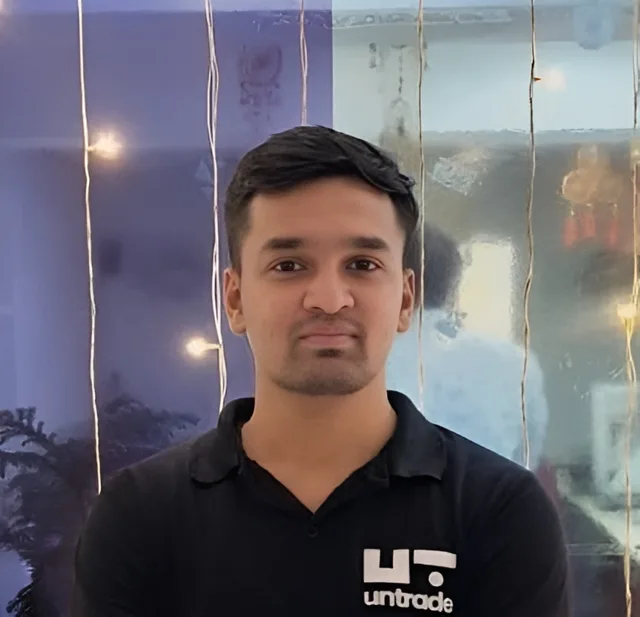

I build systematic strategies, and the tools to prove they're not overfit.
Hawkes-process momentum signals on NIFTY indices, and Option Lab: my own backtesting engine that prices every option leg from 1-minute chain data, with real costs and Monte Carlo risk.

Akola, India · IST
Featured research
Start here. Each project page has the thesis, the method and the full set of backtest statistics.

Hawkes intraday momentum on NIFTY Next 50
Volatility bursts bring directional moves. A Hawkes-intensity filter keeps the strategy out of sideways sessions and in the trend when activity spikes. Built on NIFTY 50, it held up on the higher-beta Next 50.

Option Lab: options backtesting engine
Turns any signal into multi-leg option strategies and prices each leg from 1-minute NIFTY option-chain data, with exchange charges, slippage, stops, linked exits, a parallel optimiser and Monte Carlo drawdowns.

Hawkes intraday momentum on NIFTY 50
The original version: trade only when volatility deviates enough to signal a real trend.

Overnight drift (BTST) on NIFTY 50
Most of the Indian index move happens overnight. Buy midday, exit at the next open.

Hawkes volatility breakout on BTC
Liquidation cascades cluster volatility. Ran live on Untrade, and taught me about overfitting.
All figures are historical backtests, not live performance, unless stated otherwise.
How I keep backtests honest
A good-looking equity curve is easy. These are the checks every strategy here has to survive.
No look-ahead
Signals use bar-close data only and fill at the next bar's open. Thresholds are intraday expanding quantiles, so they only see the day so far.
Real instrument, real costs
Options are priced from the actual chain, not the index. STT, exchange, SEBI, stamp duty, GST and slippage are charged on every fill.
Risk from distributions
Monte Carlo reshuffles of daily P&L give the drawdown I should plan for, not just the one history happened to produce.
Robust, not tuned
Out-of-sample and walk-forward splits, parameter-stability checks, and testing the same rules on other indices. Fewer rules beat more rules.
The path to quant
From building ML models to testing whether a trading edge is real.
Independent Quantitative Researcher
Systematic strategies on Indian indices and equities, plus the research tooling behind them.
- Built Option Lab, an options backtesting engine on 1-minute chain data
- Hawkes intraday momentum and overnight BTST strategies on NIFTY 50, Next 50 and Midcap Select
- Screened 300+ equities and found the BTST edge does not survive cash-equity costs, so I scoped it to index instruments
Quantitative Researcher
Crypto alpha research on a live strategy platform.
- Hawkes-process BTC strategy that detects volatility expansion and predicts direction; ranked among the platform's top performers
- 5-island genetic algorithm with adaptive mutation and parallel evaluation for parameter search
- Research protocol: look-ahead checks, in/out-of-sample splits, Monte Carlo robustness
AI/ML Engineer Intern
- Fine-tuned an 8B model for medical Q&A, served with CUDA; FAISS RAG pipeline; YOLOv8 detector at 97% accuracy
- After hours: my first trading system, an EMA/ADX trend strategy traded on options with ₹20k